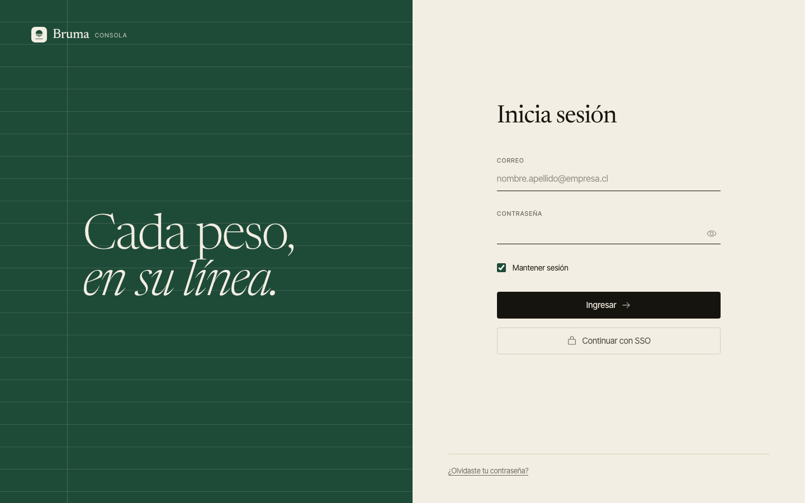
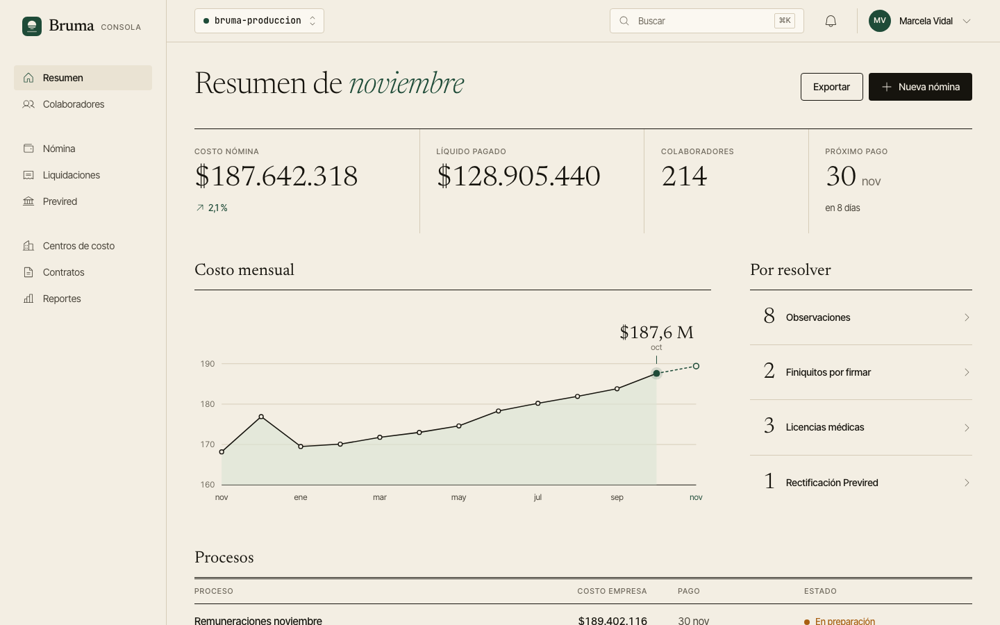
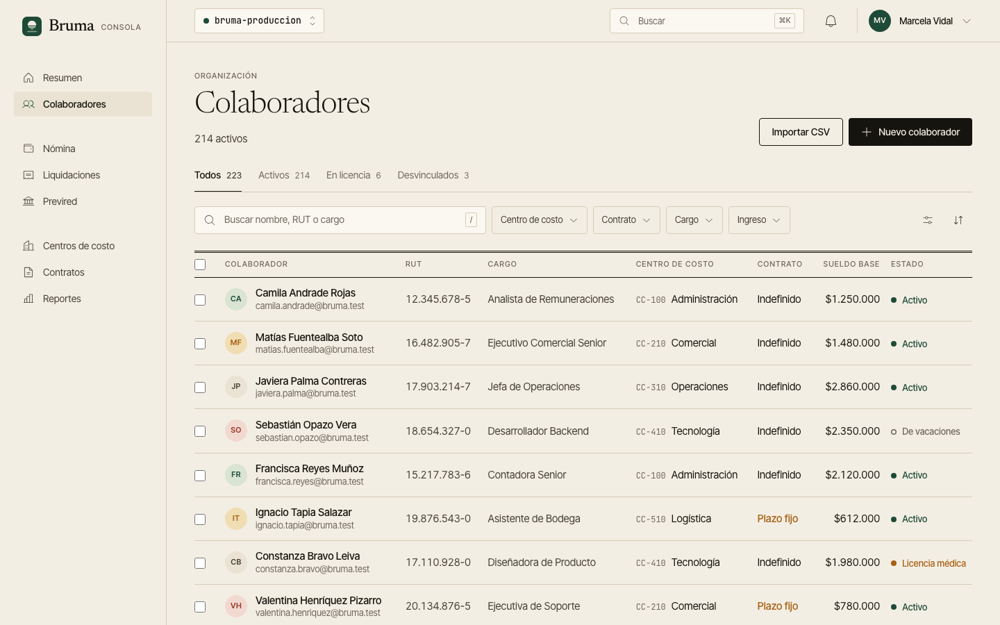
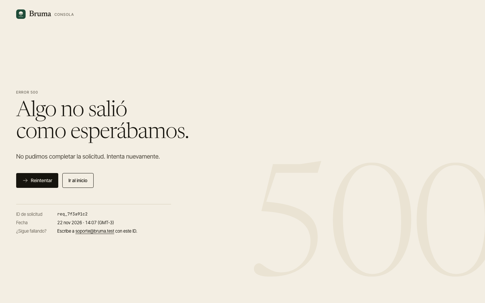

Dirección A · Editorial cálido
Dos sitios de una misma empresa, antes y después del atacante.
- Uso legítimo
- Atacante sin Reaper
- Atacante con Reaper
Consola
Next.js 15 · App Router · Tailwind CSS 4 · consola de administración en producción
-
1 Admin inicia sesión

n1-login.htmlAbrir
-
2 Consola protegida

n2-resumen.htmlAbrir
-
3 Colaboradores

n3-colaboradores.htmlAbrir
-
4 Atacante sin Reaper: se salta el login y ve esta misma consola
n2-resumen.htmlAbrir
-
5 Atacante con Reaper: error creíble

n4-error-reaper.htmlAbrir
Portal
React SPA · servidor de desarrollo Vite expuesto en staging